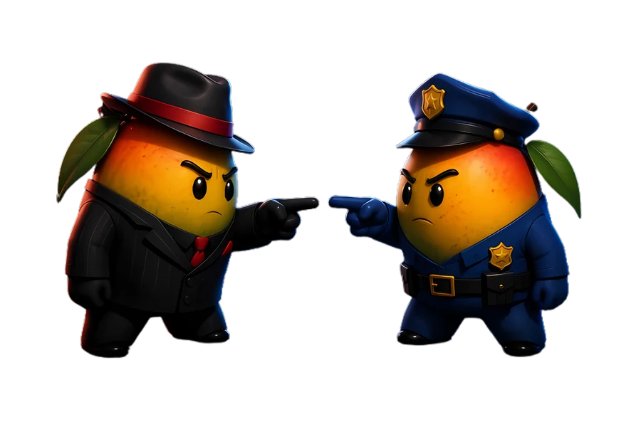
I built a classroom game where the app is the moderator.
Mango Mafia is Mafia for an ESL classroom. The teacher runs it off one projector, the students have no devices, and the app holds every secret in the game - on a screen all twenty of them are looking at. That last part is the whole engineering problem.
459 tests · 4 to 20 players · No backend during a live game
- 1The screen is publicCore constraint
- 2459 tests across 38 filesLeak audits included
- 315 roles, 42 character filesArt pipeline
- 4Rebuilt off black for a projectorFound in a real room
- 5Zero network calls mid-lessonBy design
About
A teacher who builds the tools his classroom needs
I teach English in Seoul and I write the software I wish existed at the front of the room. Mango Mafia is the third game in a suite for hagwons and academies, aimed at classes of four to twenty students, roughly seven to sixteen years old.
The brief was narrow and unforgiving: no student devices, one shared screen, a teacher who is often working in their second language, and a game whose entire appeal depends on hidden information. Everything interesting about this project comes from holding those four things at once.
I designed it, built it, drew the pipeline for the art, wrote the tests, and put it in front of a real teacher and a real projector - both of which sent work back.
Case study
Mafia, for a room with one screen and no phones
Every ESL teacher already knows Mafia works - students argue, accuse and defend themselves in English without noticing they are practising. What stops it is the bookkeeping.
The problem. Running Mafia by hand means remembering who is what, who acted on whom, and what to say next, while twenty children wait. Teachers drop it after one messy attempt. The obvious digital fix - give every student a phone - kills the part that makes it work, which is a room full of people looking at each other.
The idea. Keep the students device-free and make the app the moderator. It deals the roles, calls each one in turn, resolves the night, counts the votes, and prints the exact sentence the teacher should say next. The teacher runs the room; the app runs the rules.
My role. All of it: game design, the resolution engine, every screen, the character art pipeline, the test suite, the classroom trials and the changes that came back from them.
How it is built. Next.js on the App Router with React 19 and Tailwind v4, deployed on Vercel. The entire live session is one useReducer in the browser tab - roster, roles, night actions, votes and phase. There is no server-side session, no realtime, no student clients and no database call during a lesson, because a game that pauses on hagwon wifi is a game a teacher never opens again.
All the rules live in pure functions under a resolution engine that never names a role. It iterates six data lists - attackers, protections, death triggers, investigation modifiers, once-per-game powers and target restrictions - so a new role is a new registry entry, not a change to the engine.
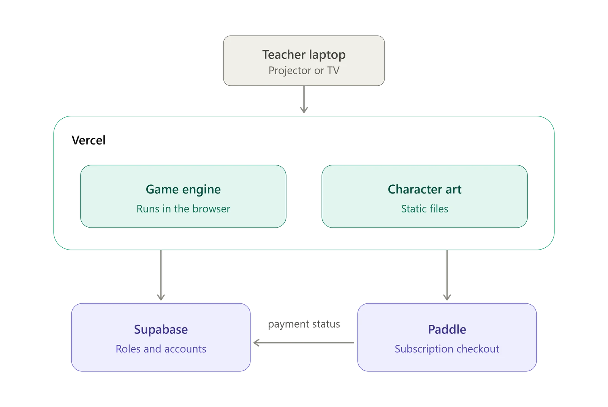
See it in action
A full game, from an empty roster to a winner
Captured at 1920x1080, which is the only size that matters - this runs on a projector and gets read from the back row.
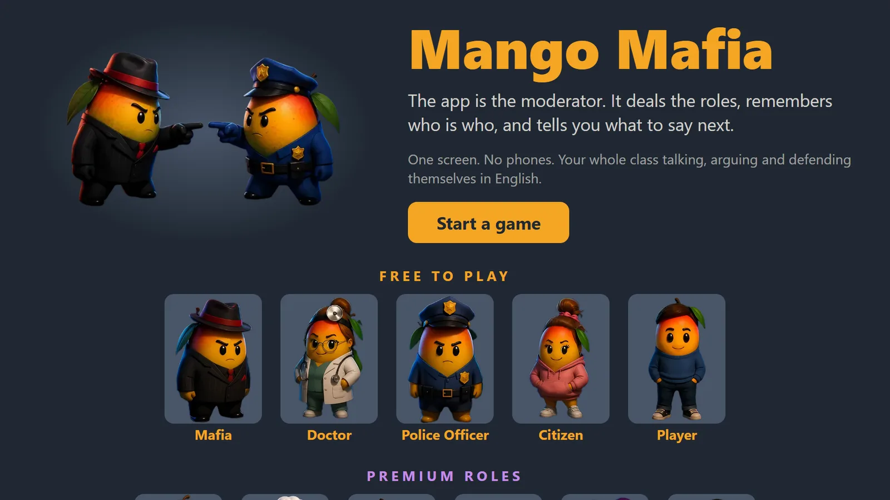
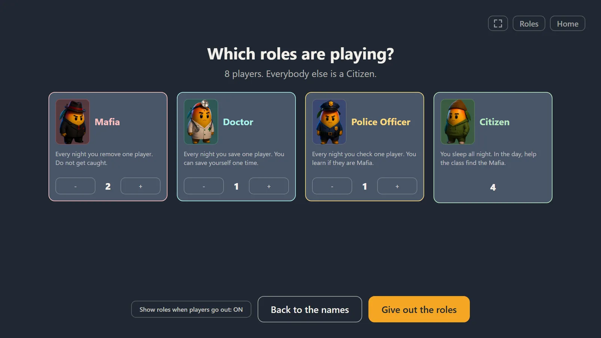
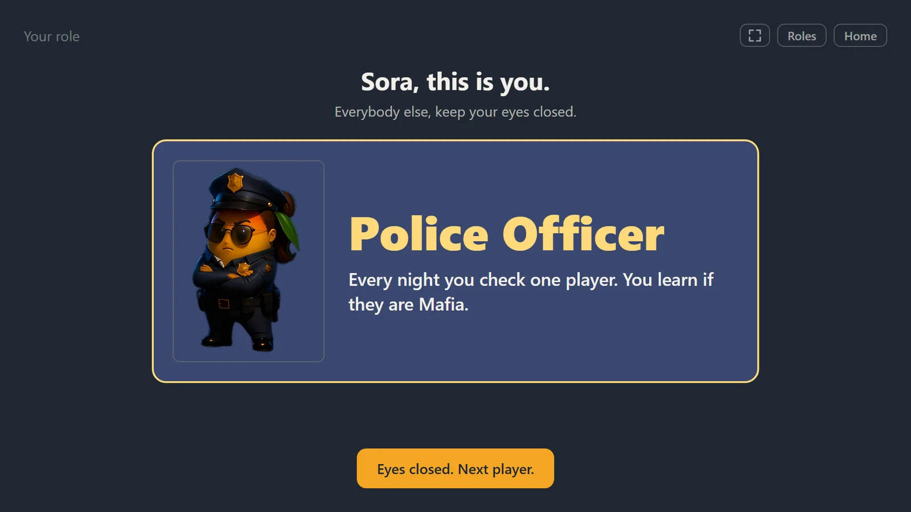
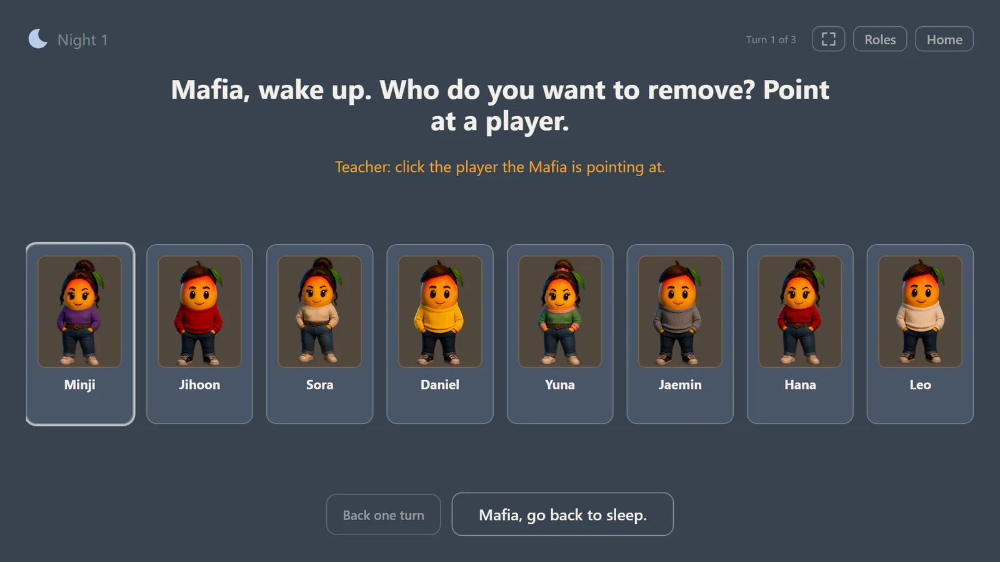
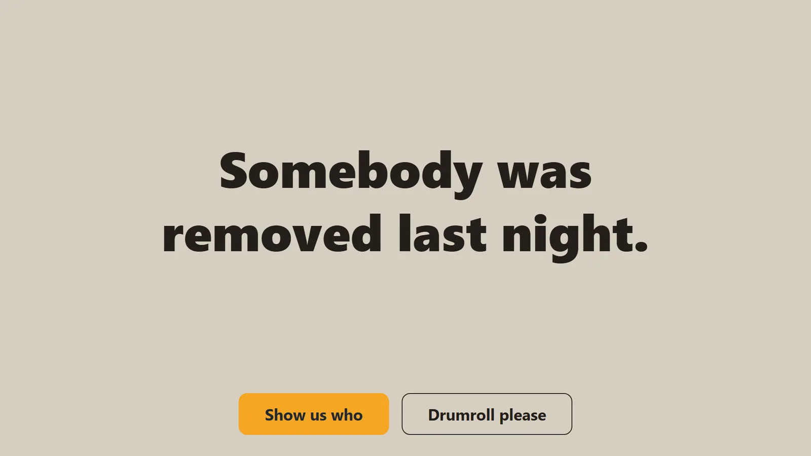
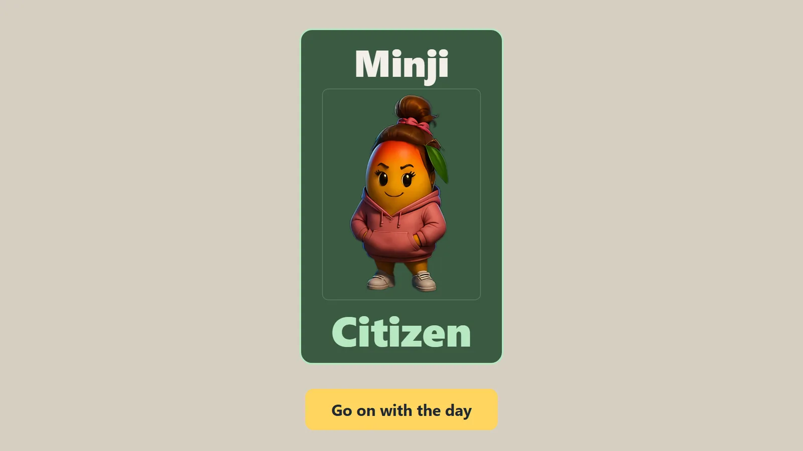
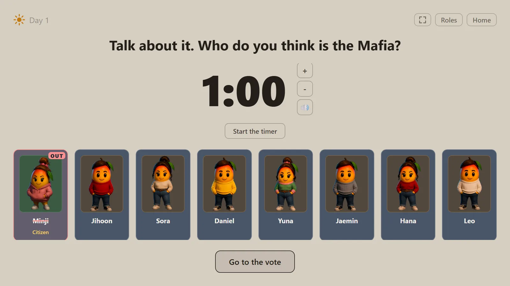
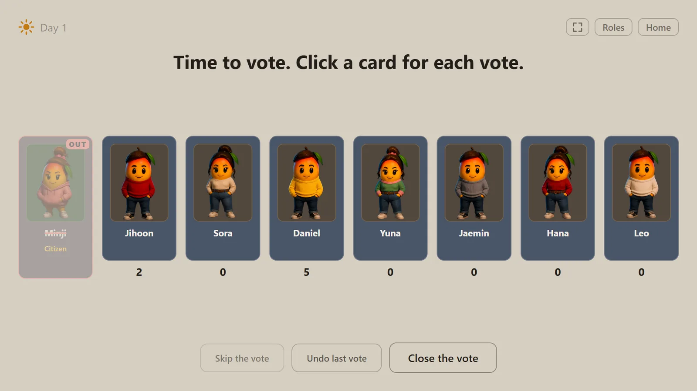
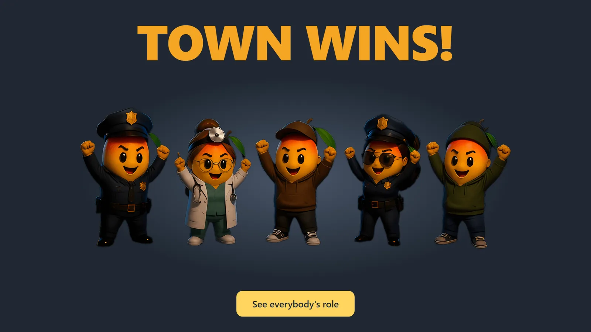
Engineering
Three problems worth writing down
None of these are Mafia problems. They are what happens when the interface is shared by the person operating it and the people it is keeping secrets from.
1. The screen is public, so "what may be drawn" is a value, not an if-statement
When the teacher clicks a card to register the Mafia's target, nothing may persist visibly - no highlight, no checkmark, no colour change. Even a prompt like "waiting for Mafia (2 remaining)" leaks: it tells the room how many Mafia are still alive.
Scattering that rule through JSX would guarantee losing it. Instead, pure functions - playerCardView, nightView - decide what reaches the screen, and the components draw whatever they are handed and ask no questions. That makes "can the class see this?" a value a test can hold. The leak audits play two games that differ only in hidden state - Doctor alive or dead, target chosen or not, self-save spent or not - and require the rendered output to come out identical, turn for turn.
The subtle one: a focus ring parks itself on the last button clicked and stays there, which is a persistent "this player was chosen" marker in everything but name. Cards drop focus after a pointer click but not after a keyboard Enter, so tabbing still works and the mouse leaves nothing behind.
2. A projector cannot render black, and the whole app was near-black
This one only showed up in a real classroom. A projector renders black as no light, which in a lit room is the same washed-out grey as the wall - so the Mafia mango in his black suit on a near-black background arrived as one flat shape. The best art in the app was invisible in the room it was built for.
Every surface moved off black, and the ink now follows the surface: three utility classes redeclare the ink and accent tokens, and Tailwind compiles every text-ink/70 into a colour-mix over the token, so a whole page could go light without touching 150 class names. palette.test.ts reads the stylesheet, checks every ink and surface pair against 4.5:1, checks every character against the darkest tone sampled from the art, and fails if anything creeps back towards black or white.
3. A class in progress is sacred, which rules out the obvious fixes
No modals, no countdowns, no upsell that can appear mid-lesson. That constraint removes the usual answer to most usability problems, and the interesting cases are where it collides with the public screen.
A teacher who forgets to click the Mafia's target loses the choice silently. The obvious fix - warn them - is exactly the tell the always-enabled button exists to remove, because the warning would only ever appear on turns where nobody acted. So the control is unconditional: a "Back one turn" button on every beat of the night, which keeps recorded choices so pointing again replaces a pick, and deliberately does not restore a stale investigation result.
The same reasoning ended a bug report. On the Police Officer's turn, once the officer is out, clicking a card produces nothing at all - which reads as broken. It is correct: any visible difference on that turn would tell the class the officer is gone, and they would work out who from who went out. A test pins both halves so neither can be "fixed" without the other being noticed.
Results
Measured, not claimed
Every number below comes from a command that can be run again.
What the tests caught. The leak audits are the load-bearing ones: run two games differing only in what is hidden, and require identical screens. An earlier version of them passed against a broken reducer because the fixtures were built in the wrong order - the sort of green that is worse than red. An art audit reads the folder and has twice caught a delivery the app could not ask for, including one batch that silently dropped every neutral character.
What only a real room caught. Driving a full game in a browser at 1080p found two things no static test could see: an OUT badge painted over by the art slot below it, and a name wrapping across two lines on the reveal splash. The projector found the palette. A teacher found that the setup screen had a label which read like a button and did nothing. None of those are visible from a passing test suite.
An investigation that ended in "no fault found". A playthrough reported that the roles were not randomising - the same class got the same roles twice. I checked the shuffle, the deal, the reducer, and the reset-and-redeal path, then ran 12,000 deals: every seat drew Citizen 50%, Mafia 25%, Doctor and Police 12.5%, which is the textbook answer for eight players. The deal was correct. Half a class of eight are Citizens, so "we got the same roles again" is what correct randomness sounds like from the back of a room. The finding is written down so nobody spends a day on it twice.
What is still open, honestly. The character art carries a black matte - a near-black rim that was free on a black background and is a faint halo on the new lighter ones. It is currently hidden by the panel tones rather than corrected, because the fix cannot tell a black matte from a legitimately black suit and needs an artist's eye before 42 binaries get rewritten. It is documented in the repository rather than quietly left.
Contact
Get in touch
I am a teacher and developer in Seoul building classroom-first edtech. If you would like to talk about Mango Mafia, about 59 Seconds, or about working together:
The source repository is private. Mango Mafia is an unreleased commercial product that will sit behind a subscription alongside two sibling games, and its character art is licensed content. Code excerpts and a walkthrough are available on request.